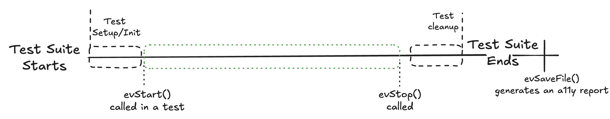
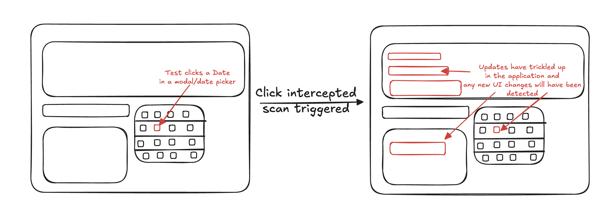

Chapter 1
Official Development Docs: https://developer.evinced.com/
All code examples: https://github.com/GetEvinced/examples/
Evinced Software Development Kits(SDKs) will attempt to scan the screen for accessibility issues. A screen is what is available during a test, including the full Document Object Model(DOM) or Accessibility Tree. This could be a mobile app or a browser. In laymans terms it will scan what is available either one time, or continusly when an event1 fires.
After the testing/scanning phase is completed a report is produced in a chosen format, typically HTML. This report AKA Artifact is self-contained and includes quick-fixes, in-depth details, and screenshots of the various accessibility issues found.
Once a report is generated remediation is pursued either by logging the report as a development issue or by quickly performing the suggested changes. Manual confirmation and testing of any fixes is typcially pursued with the Mobile Flow Analyzer (Desktop App) or the Web Flow Analyzer (Chrome Extension).
This guide will contain code an explanation and code examples for:
- authenticating against Evinced servers
- setting up Continuous mode
- calling a single scan of the current state: Analyze mode
- Miscellanous questions related to edge cases or larger scale usage
test.describe("Tests the Evinced demo page", () => {
test.beforeEach(async ({ page }, testInfo) => {
evincedService = new EvincedSDK(page);
// This is specifically for upload to platform,
// it will name the test using the name in the test string
// In this case, we are using evCongfig to use this functionality,
// can you also use it at the test level by passing a method to evStop
// await evincedService.evStop({ uploadToPlatform: true });
evincedService.testRunInfo.addLabel({
testName: testInfo.title,
testFile: testInfo.file,
environment: "CI/CD Pipeline",
});
// Use continuous mode for each test
await evincedService.evStart();
// Go to the starting url before each test
await page.goto("https://demo.evinced.com/");
});
-
A click, tap, keypress, any sort of interaction with the web page or mobile app. ↩
Authentication
Evinced SDKs will always require a USER ID and a SECRET of some kind. A SECRET could be an API key obtained from https://hub.evinced.com or a JSON Web Token(JWT) provided by an evinced employee.
If you are using a API key typically this is referred to as a
secretin thesetCredentials()method.If you are using a JWT then this is referred to as a
token.
Use your local Environment variables or whatever current secret management system your team must conform to.
Node JS Environment
Playwright JS/TS
// js-playwright/global.settings.js
// If using this approach, make sure you import the file into playwright.config.js/ts
async function globalSetup(config) {
try {
await setCredentials({
serviceId: process.env.EVINCED_SERVICE_ID,
secret: process.env.EVINCED_API_KEY,
});
} catch (error) {
throw new Error("Evinced SDK authorization failure.");
}
}
module.exports = globalSetup;
Cypress
// js-cypress/cypress/support/e2e.js
Evinced.setCredentials({
serviceId: Cypress.env("serviceId"),
secret: Cypress.env("secret"),
});
Testcafe
// js-testcafe-web/.testcaferc.js
fixture: {
before: async () => {
// Set credentials
try {
console.log("Accessing Global Credentials");
await setCredentials({
serviceId: process.env.EVINCED_SERVICE_ID,
secret: process.env.EVINCED_API_KEY,
});
// To configure Offline Credentials use below example
// await setOfflineCredentials({
// serviceId: process.env.EVINCED_SERVICE_ID,
// token: process.env.EVINCED_AUTH_TOKEN,
// });
} catch (error) {
console.log("Error Evinced SDK authorization failure ", error);
}
},
WDIO Web & Mobile
// WEB js-wdio-web/wdio.conf.js
before: async function (capabilities, specs) {
if (!process.env.EVINCED_SERVICE_ID || !process.env.EVINCED_API_KEY) {
console.error("no EVINCED_SERVICE_ID or EVINCED_API_KEY")
return;
}
// Using a before hook, you can authenticate your SDK with your credentials by storing them in your environment variables
// If you are testing in CI/CD then use setCredentials, if you are testing locally, you can use setOfflineCredentials
await Evinced.setCredentials({
serviceId: process.env.EVINCED_SERVICE_ID,
secret: process.env.EVINCED_API_KEY,
});
// If provided a JSON Web Token by Evinced use
// the `token` keyword for Offline Authentication
// token: process.env.EVINCED_JWT
// await Evinced.setOfflineCredentials({
// serviceId: process.env.EVINCED_SERVICE_ID,
// token: process.env.EVINCED_AUTH_TOKEN,
// })
// MOBILE js-wdio-mobile/test/specs/mobileTest.js
evincedWdioSDK = new EvincedWdioMobileSdk();
const isLicenseValid = evincedWdioSDK.setupCredentials(
process.env.EVINCED_SERVICE_ID,
process.env.EVINCED_API_KEY
);
Unit Tester
// nextjs-react-unit-tester/jest.setup.js
import '@testing-library/jest-dom';
import { configure } from "@evinced/unit-tester";
configure({
serviceAccountId: process.env.EVINCED_SERVICE_ID,
serviceAccountSecret: process.env.EVINCED_API_KEY,
// you can use an offline token here as well
// offlineToken: process.env.EVINCED_OFFLINE_UT_TOKEN
});
Java
Selenium
// java-selenium-web/src/test/java/com/krissutherland/EvincedSetupTest.java
EvincedSDK.setOfflineCredentials(System.getenv("EVINCED_SERVICE_ID"), System.getenv("EVINCED_AUTH_TOKEN"));
Defer to the official documentation for each framework for more in-depth coverage. Official Development Docs: https://developer.evinced.com/
All code examples: https://github.com/GetEvinced/examples/
Continuous Mode
Continuous Mode constantly scans at the start point when it is invoked. Then at the end point, when it is disabled it returns a Report. Typically this Report object is saved as an HTML, CSV, or JSON file.

While the Scanning is enabled, events like clicks or keyboard input will be captured and automatically trigger a re-scan. Lets say for for example you have a date picker and when clicked the new date triggers several updates across the components on the page.
Without continous mode you'd have to know in your tests where this UI change happens, add a method calling for an a11y scan. This is time intensive and error prone.
With Evinced's Continuous Mode you do not have to manually invoke anything! Turn it on at the beginning of the test then turn it off at the end of the test and collect your report. In this scenario the clicking of the date picker triggeres a rescan and any highlighting, new content, changes of colors, etc is automatically captured.

Enabling the Scan
Web
Typically the method name is evStart(). This is the point in time where the Evinced SDK will start "watching" the browser for changes.
Mobile
Ending the Continuous Scanning
Web
evStop() is the method that will halt the scanning and immediately attempt to return a Report. This report is typically best thought of as an array of Accessibility Issues found during the test. Each Issue consists of IDs, Criticality, and other useful pieces of information. Read more in the page about Reporting.
Mobile
Defer to the official documentation for each framework for more in-depth coverage. Official Development Docs: https://developer.evinced.com/
All code examples: https://github.com/GetEvinced/examples/
Playwright JS
WebdriverIO Web
WebdriverIO Mobile
Cypress
Java Selenium
Cucumber BDD
Analyze
The Evinced Report
Aggregrated Reporting
Validations
Axe
Skip Validations
CICD
Config
evConfig File
Skip Validations
Toggles
Upload to Platform
Troubleshooting
Contributing
Using MDBOOK https://rust-lang.github.io/mdBook/index.html.
To build and open the book in a browser
mdbook build ./docs/sdk-manual --open
If actively developing use watch or serve
mdbook serve ./docs/sdk-manual --open and this will open it in browser.
mdbook watch ./docs/sdk-manual --open
Changes will be waited on but you may have to manually reload. You shouldn't but you may have to. If you want changes to happen quickly then use serve.